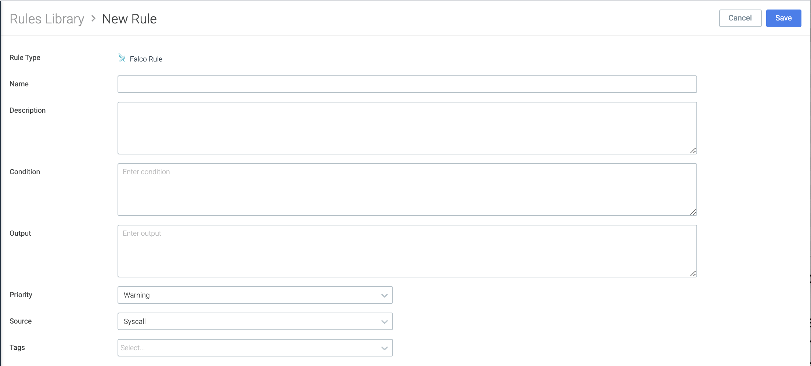

Policies
This page introduces Sysdig policies and the rules that comprise them, providing the conceptual background needed to create, edit, and apply security policies in your own environment.
Understanding Sysdig Secure Policies
A Sysdig Secure policy is a combination of rules about activities an enterprise wants to detect in an environment, the actions that should be taken if the policy rule is breached, and-- potentially-- the notifications that should be sent. A number of policies are delivered out-of-the-box and can be used as-is, duplicated, or edited as needed. You can also create policies from scratch, using either predefined rules or creating custom rules.
Reviewing the Runtime Policies UI
Select Policies > Runtime Policies to see the default Policies included with Sysdig Secure.
From this overview, you can:
See at a Glance
Severity Level Default policies are assigned High, Medium, Low, or Info level severity, which can be edited.
Enabled/Not Enabled Viewed by toggle position.
Policy Summary
Includes
Updatestatus, the number ofRules, assignedActionsto take on affected containers (Stop | Pause | Notify), andCapturedetails, if any.
Take Action
From this panel you can also:
Drill down to policy details(and potentially Edit them)
Search and filter policies by name, policy name, or severity level
Enable/Disable a policy using the toggle
Create a new policy using the
+Add Policybutton
Understanding Sysdig Secure Rules
Rules are the fundamental building blocks you will use to compose your security policies. A rule is any type of activity that an enterprise would want to detect in its environment.
Rules can be expressed in two formats:
Falco rules syntax, which can be complex and layered. All the default rules delivered by Sysdig are Falco rules, and users can also create their own Falco rules.
List-matching rules syntax, which is simply a list against which a
match/not matchcondition is applied. All these rules are user-defined. They are grouped into five types: Container Image, File System, Network, Process, and Syscall.
Understanding the Rules Library
The Rules Library includes all created rules which can be referenced in policies. Out of the box, it provides a comprehensive runtime security library with container-specific rules (and predefined policies) developed by Sysdig's threat-research teams, Falco's open-source community rules, and international security benchmarks such as CIS or MITRE ATT&CK.
Audit-Friendly Features
In the Rules Library interface, you can see at a glance:
Published By:
Last Updated
for enhanced traceability and audit.
Note
Default rules appear in the UI as Published By: Sysdig
User-defined rules appear as Published By: Secure UI
Tags
Rules are categorized by tags, so you can group them by functionality, security standard, target, or whatever schema makes sense for your organization.
Various tags are predefined and can help you organize rules into logical groups when creating or editing policies.
Search
Use the search boxes at the top to search by rule name or by tag.
Using Falco within Sysdig Secure
What is Falco
Falco is an open-source intrusion detection and activity monitoring project. Designed by Sysdig, the project has been donated to the Cloud Native Computing Foundation, where it continues to be developed and enhanced by the community. Sysdig Secure incorporates the Falco Rules Engine as part of its Policy and Compliance modules.
Within the context of Sysdig Secure, most users will interact with Falco primarily through writing or customizing the rules deployed in the policies for their environment.
Falco rules consist of a condition under which an alert should be generated and an output string to send with the alert.
Conditions
Falco rules use the Sysdig filtering syntax.
(Note that much of the rest of the Falco documentation describes installing and using it as a free-standing tool, which is not applicable to most Sysdig Secure users.)
Rule conditions are typically made up of macros and lists.
Macros are simply rule condition snippets that can be re-used inside rules and other macros, providing a way to factor out and name common patterns.
Lists are (surprise!) lists of items that can be included in rules, macros, or other lists. Unlike rules/macros, they can not be parsed as Sysdig filtering expressions.
Behind the scenes, the falco_rules.yaml file contains the raw code for all the Falco rules in the environment, including Falco macros and lists.
Anatomy of a Falco Rule
All Falco rules include the following base parameters:
rule name: default or user-assigned
condition: the command-line collection of fields and arguments used to create the rule
output:
source:
description:
tags: for searching and sorting
priority
Select a rule from the Rules Library to see or edit its underlying structure. The same structure applies when creating a new Falco rule and adding it to the library.
Existing Rule | |
| |
Create a Rule | |
 |
Note
Falco rules with the source k8s_audit need Kubernetes Audit logging enabled for conditions to be met.
About Falco Macros
Many of the Falco rules in the Rules Library contain Falco macros in their condition code.
You can browse the Falco Macros list, examine a macro's underlying code, or create your own macro. The default Falco rule set defines a number of macros that make it easier to start writing rules. These macros provide shortcuts for a number of common scenarios and can be used in any user-defined rule sets.
About Falco Lists
Default Falco lists are added to improve the user experience around writing custom rules for the environment.
For example, the list allow.inbound.source.domains can be customized and easily referenced within any rule.
(On-Prem Only) Upgrading Falco Rules with the Rules Installer
Sysdig Secure SaaS is always using the most up-to-date Falco rules set.
Sysdig Secure On-Prem accounts should upgrade their Falco rules set regularly.
Rules Installer
For the Docker pull command and instructions for the Rules Installer, see Install Falco Rules On-Premises.
Understanding List-Matching Rules
List-matching rules (formerly known as "fast" rules) are used for matching against lists of items (when matchItems=true) or matching everything other than lists of items (when matchItems=false). They provide for simple detections of processes, network connections, and other operations. For example:
If this process is detected, trigger an action when this rule is in a policy (such as send notification).
Or
If a network connection on x port is detected, trigger an action when this rule is in a policy (such as send notification)
Unlike Falco rules, the list-matching rule types do not permit complex rule combinations, such as "If a connection on x port from y IP address is detected..."
The five list-matching Rule Types are described below.
Container Rules
These rules are used to notify if a specific image name is running in an environment. The rule is evaluated when the container is started. The items in the list are image pattern names, which have the syntax <host.name>:<port>/<name>/<name2>:<tag>@<digest>.
Only <name2> is required; everything else is optional and inferred building on the name.
See also: How Matching Works: Container Example and Create a List-Matching Rule: Container Type Example.
File System Rules
These rules are used to notify if there is write activity to a specific directory/file. The rule is evaluated when a file is opened. The items in the list are path prefixes.
For example: /one/two/three would match a path /one/two/three, /one/two/three/four, but not /one/two/three-four.
Network Rules
These rules are used to:
Detect attempts to listen for inbound connections on ports on a specific list
Generally identify any inbound or outbound connection attempts
Note that the current Sysdig UI talks about "Allowing" or "Denying" connections with network rules, but this can introduce some confusion.
For both Inbound and Outbound connections:
Allowmeansdo nothingDenymeansmatch any attempt to make an inbound or outbound a connection
You would still need to add the rule to a policy and attach actions to respond to a connection attempt by stopping/pausing/killing the container where the connection occurred. See also: Understanding How Policy Actions Are Triggered.
Process Rules
These rules are used to detect if a specific process, such as SSH, is running in a particular area of the environment.
The rule is evaluated when a process is launched. The items in the list are process names, subject to the 16-character limit enforced by the Linux kernel. (See also: Process Name Length information.)
Syscall Rules
Note
The syscall rule type is almost never deployed in user-created policies; the definitions below are for information only.
These rules are used (internally) to:
Notify if a specific syscall happens in a list
Notify if a syscall outside this trusted list happens in the environment
The rule is evaluated on syscalls that create inbound (accept, recvfrom, recvmsg, listen) and/or outbound (connect, sendto, sendmsg) connections. The items in the list are port numbers.
How Matching Works: Container Example
A Container Image consists of the following components:
<registry host>:<registry port>/<image>:<tag>@<digest>.
Note that <image> might consist of multiple path components such as <project>/<image> or <project>/<subproject>/<image>.
Complete example: docker.io:1234/sysdig/agent:1.0@sha256:da39a3ee5e6b4b0d3255bfef95601890afd80709
Where:
<registry host> = docker.io
<registry port> = 1234
<image> = sysdig/agent
<tag> = 1.0
<digest> = sha256:da39a3ee5e6b4b0d3255bfef95601890afd80709
Each item in the containers list is first broken into the above components, using the following rules:
If the string ends in
/, it is interpreted as a registry host and optional registry port, with noimage/tag/digestprovided.Otherwise, it is interpreted as an image. The registry host and port may precede the image and are optional, and the tag and digest may follow the image, and are optional.
Once the item has been broken into components, they are considered a prefix match against candidate image names.
Examples:
docker.io:1234/sysdig/agent:1.0 @sha256:da39a3ee5e6b4b0d3255bfef95601890afd80709: must match all components exactly
docker.io:1234/sysdig/agent:1.0: must match the registry host, port, image, and tag, with any digest
docker.io:1234/sysdig/agent: must match the registry host, port, and image, with any tag or digest
sysdig/agent: must match the image, with any tag or digest. Would not match an image docker.io:1234/sysdig/agent, as the image provides additional information not in the match expression.
docker.io:1234/: matches all images for that registry host and port
docker.io/: matches all images for that registry host
Getting Started
Note
There are a variety of optional tools to help automate the creation of policies. See also:
Image Profiles to automate creation of image-specific policies
[Beta] Policy Advisor to automate creation of Kubernetes pod security policies (PSPs)
[Beta] Network Security Policy Tool to author and fine-tune Kubernetes network policies